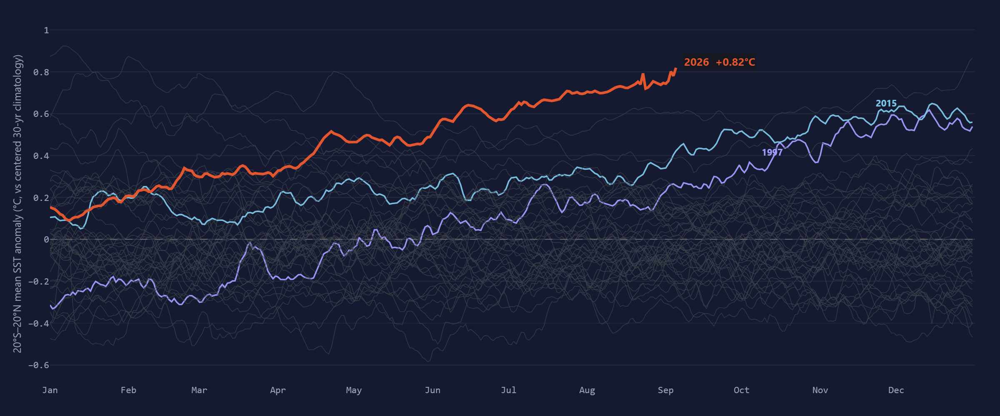
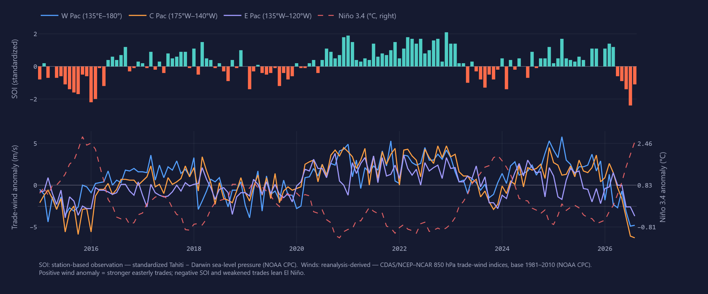
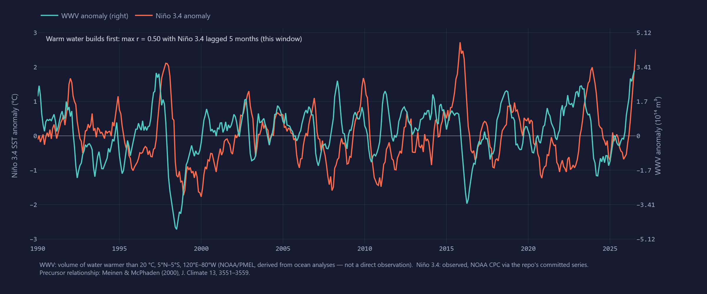

What ENSO is doing — surface, atmosphere, subsurface.
One tab, three layers of the same coupled system: the ocean surface sets the stage, the atmosphere confirms the coupling, and the subsurface loads what comes next.
The surface
OISSTv2.1 daily · 20°S–20°NThe tropical belt as year-lines — the background ocean state against which every Niño box is judged.
Tropical-belt SST anomaly vs every year on record
Daily
The atmosphere
Station SLP · reanalysis windsENSO is only real when the atmosphere plays along: the pressure see-saw and the trades, with Niño 3.4 overlaid.
Southern Oscillation Index & equatorial 850 hPa trade winds
Monthly
Winds: Trade-wind anomalies — the zonal wind at 850 hPa over the equatorial Pacific from the NCEP/NCAR (CDAS) atmospheric reanalysis, with positive values meaning stronger easterlies. Sustained westerly anomalies (negative here) push warm water eastward and show the atmosphere coupling to a developing event.
The subsurface
PMEL warm water volumeThe recharge–discharge cycle: heat banked below the surface today constrains what ENSO can do in the coming seasons.
Warm water volume vs Niño 3.4
Monthly
Proposed separately, for the ENSO Forecast tab
forecast_skill/A fourth, independent proposal surfaces the forecast-verification figures the pipeline already renders — the EC46 global-temperature skill plot and the archived ENSO plume verifications. It belongs beside the forecasts it grades, not on this observations tab: see 04-forecast-skill-panel (mock-up and README in that folder).